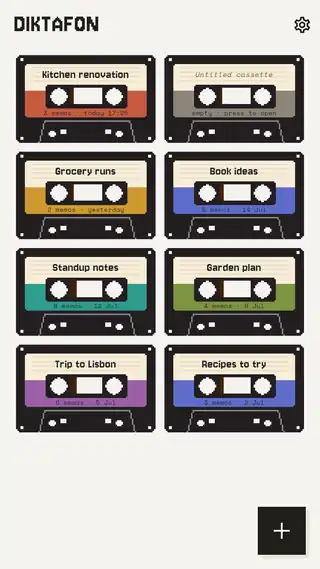
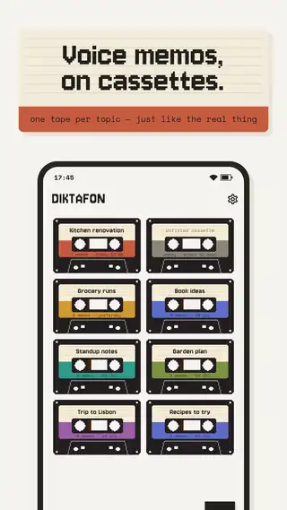

Diktafon: Voice Memos on Tape
صوت وفيديو وموسيقى
Diktafon is a voice recorder built around one idea: capturing a thought and finding it again later should feel effortless. Your memos live on cassettes — one tape per topic, like "shopping", "kitchen renovation" or "book ideas". Each cassette plays as one continuous tape of your recordings, in order
✓ ترخيص مفتوح (MIT) · آخر تحديث: 2026-08-01
1.0.9الإصدار
30.7 MBالحجم
MITالرخصة
Open in Kanzتحميل APK (30.7 MB)
Download APK
SHA-256: b267d6c79f2ac97112b308137b14cbc0405174ffc3e65e8a911c9880fcd936c5


امسح الكود لفتح صفحة التطبيق
Scan to open this app page
لو كنز مش متثبت عندك: نزّل متجر كنز.
Not installed? Get the Kanz store.